Россия - Российский рубль
10 рублей
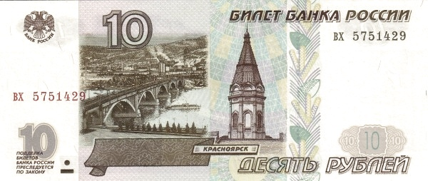 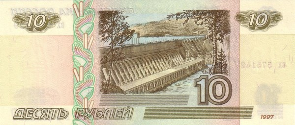Лицевая сторона - Мост через Енисей; часовня Параскевы Пятницы
Обратная сторона - Красноярская ГЭС
50 рублей
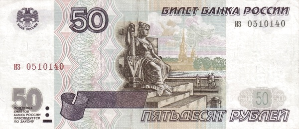 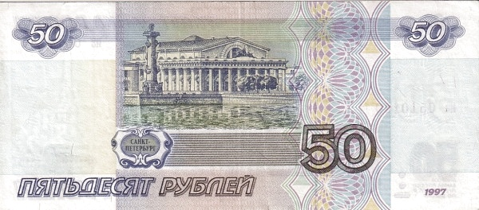Лицевая сторона - Скульптура в основании ростральной колонны; Петропавловский собор
Обратная сторона - Ростральная колонна; здание биржи
100 рублей
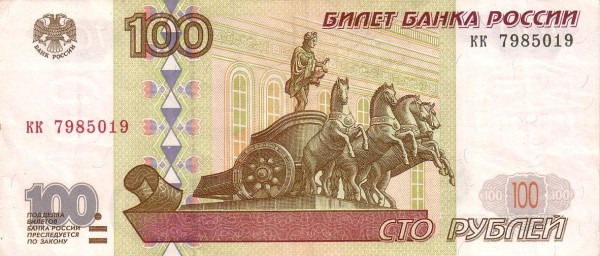 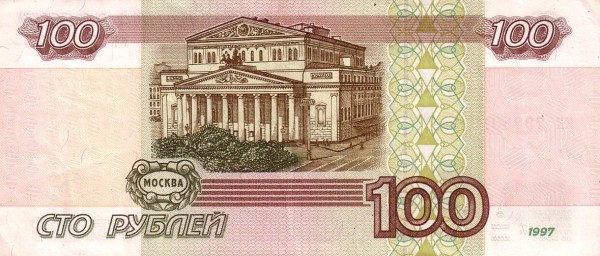Лицевая сторона - Квадрига на портике Большого театра
Обратная сторона - Фасад Большого театра
200 рублей
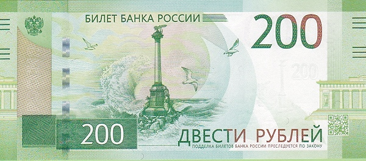 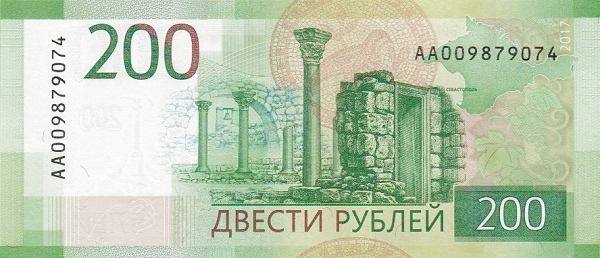Лицевая сторона - Херсонес Таврический
Обратная сторона -Памятник затопленным кораблям; пропилеи Графской пристани
500 рублей
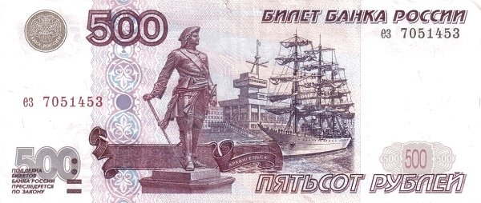 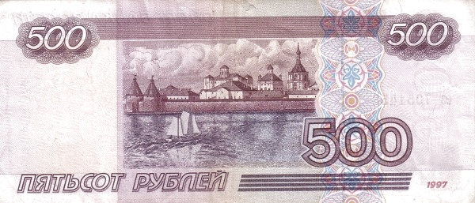Лицевая сторона - Памятник Петру I; парусник в порту Архангельска
Обратная сторона - Соловецкий монастырь
1000 рублей
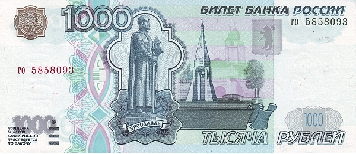 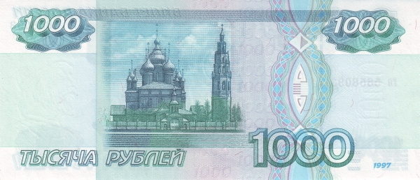Лицевая сторона - Памятник Ярославу Мудрому и часовня Казанской Богоматери на фоне Ярославского Кремля
Обратная сторона - Церковь Иоанна Предтечи с колокольней
2000 рублей
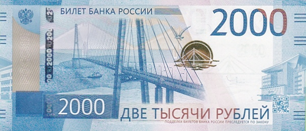 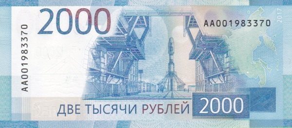Лицевая сторона - Русский мост; здание Дальневосточного федерального университета во Владивостоке
Обратная сторона - Космодром «Восточный» в Амурской области
5000 рублей
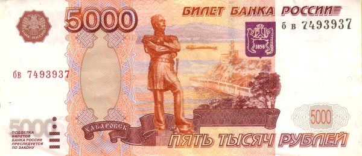 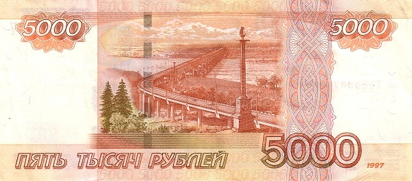Лицевая сторона - Памятник Муравьёву-Амурскому на фоне набережной Амура
Обратная сторона - Мост через Амур